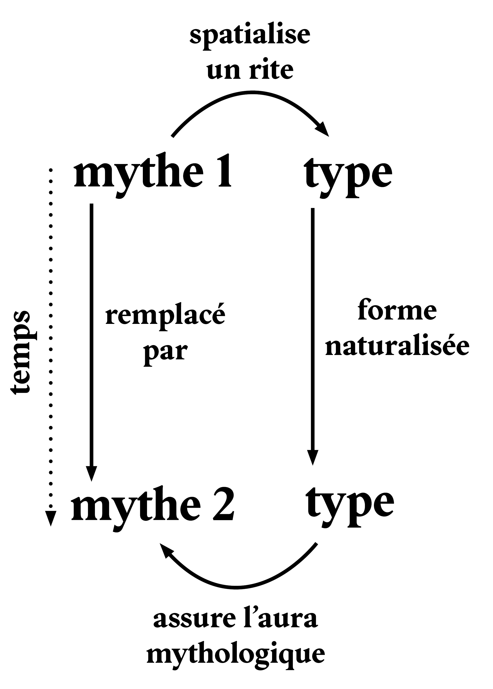
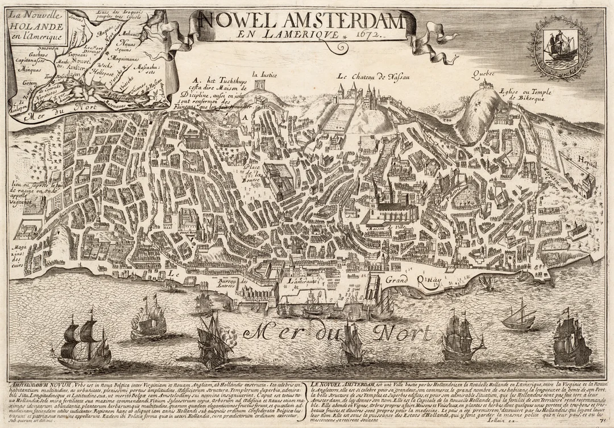
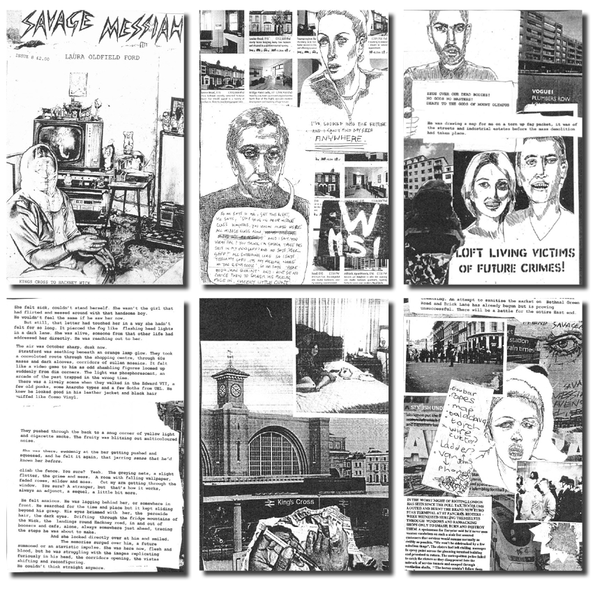

Fact-Checking & Reality Shifting
Louis Fiolleau
Club ASAP 11
septembre 2026
Temps de lecture : 10 min
Avant de laisser libre cours aux diverses superstitions architecturales, aux fictions urbaines autoréalisatrices et autres théories complotistes qui peuplent la vie souterraine des bâtiments, il nous semble utile de faire un détour par la tradition théorique sur laquelle ce club reposera sans doute : celle du mythe.
Après tout, les mythes ne seraient-ils pas, au fond, de petites histoires ou des paroles magiques qui ont réussi — c’est-à-dire des énoncés performatifs qui, à force d’être racontés, ont fini par produire des effets bien réels ?
En effet, pour Roland Barthes, l’un des penseurs de référence en la matière, le mythe ne se définit pas tant par ce qu’il dit, c’est-à-dire son message, que par la manière dont il le dit, c’est à dire, par son registre d’énonciation. Selon ses propres termes, tout objet peut ainsi accéder au mythe, indépendamment de son contenu : aussi bien une cosmogonie entière expliquant la naissance du monde qu’une recette de cuisine locale ou une publicité pour un détergent.
Sans entrer dans le jargon sémiologique, on peut résumer le mythe comme un objet dont l’histoire a été effacée : son origine socioculturelle, les circonstances de sa production et son sens premier sont progressivement oubliés, jusqu’à ce que ne subsiste qu’une signification nouvelle, présentée comme allant de soi, comme si elle avait toujours été là.
Roland Barthes donne l’exemple du mariage comme mythe naturalisant la conjugalité et le modèle familial. Le mythe s’incarne notamment dans la Bible et efface les considérations matérielles qui ont conduit les sociétés humaines à adopter le modèle du couple éternel. Là s’esquisse le pouvoir propre du mythe : « transformer la réalité du monde en une image du monde, l’histoire en nature ».
Or, pour Barthes, ce processus mythologique d’effacement historique constitue même l’un des ressorts constitutifs de l’idéologie bourgeoise : l’idée d’une société sans classe et sans contradictions, guidée par la rationalité prétendument pure du capital.
Alors, que faire du mythe ? Faut-il l’accepter, le combattre, ou chercher à lui substituer d’autres récits ?
Barthes identifie trois manières d’intervenir sur un mythe :
1. Reproduction du mythe
La première manière est celle du reproducteur de mythe et il s’avère que l’architecture, en tant que production du bâti, a été et demeure un vecteur privilégié de la persistance des mythes. Rien de mieux que la pierre pour fixer durablement une croyance.
Plus ancré dans la discipline, on pourrait avancer que le type est le véhicule idéal par lequel la symbolique abstraite du mythe accède à une existence physique et se fixe dans le paysage.
Par exemple, Barthes nous explique comme le type néo-basque a été l’incarnation du mythe de la basquité. Un chalet blanc, aux tuiles canal, aux boiseries brunes et aux pans de toit asymétriques, aperçu en Ile-de-France, ne renvoie que très partiellement aux pratiques socioculturelles, aux usages et aux techniques historiques qui ont pourtant déterminé l’existence de l’architecture vernaculaire basque dont il est censé être l’héritier.
A l’inverse, il devient le signe exportable et déplaçable d’une petite-bourgeoisie ouverte à de nouveaux territoires de villégiature. Dans cette opération mythologique, on peut alors soustraire aux maisons basques toute leur technologie propre - qui servait notamment une production agricole ou pastorale - et ne garder qu’un principe typologique afin que l’essence de la basquité devienne immédiate et indiscutable.
Le type brouille la fonction et la symbolique spatiale dans un tout indivisible et renforce l’origine abstraite du mythe. Certaines figures typologiques ont d’ailleurs fini par contenir en elles une portée mythologique qui dépassait largement leur fonction première. Utiliser la tour, le labyrinthe, la porte, le cloître permet de s’assurer une inscription dans la longue histoire des mythes.
Selon l’historien Goerd Peschken, le temple dorique ne fut pas seulement une matérialisation abstraite et pure de la cosmogonie grecque mais s’inscrivait dans une filiation ancienne : celle des greniers sacrés que l’on trouvait déjà en Galice.
Le type du temple contenait déjà une aura magique avant d’être investie par la mythologie grec.
Il n’est donc pas étonnant que le mythe bourgeois moderne se soit à son tour construit autour de la tradition des types architecturaux. Dans Le livre des passages*, Walter Benjamin observait ainsi que les passages couverts parisiens de la fin du XIXème et l’architecture sacrée classique partageaient des compositions similaires, renforçant ainsi leur effet fantasmagorique sur les populations urbaines : Une nef centrale distribue de part et d’autre une succession d’alcôves autonomes, où les boutiques viennent en quelque sorte prendre la place des chapelles et les marchandises celle des saints.
* Projet inachevé, une compilation de ses notes et travaux a toutefois été publiée en 1999
L’appel par l’architecte à certains types sacralisés est une astuce de conception qui permet alors de faire revêtir une strate mystique à un nouveau programme. Le type basilical réutilisé dans les passages commerciaux du XIXème siècle investit ces derniers d’une aura magique. Le type architectural décorrèle le mythe de son rite d’origine.
Il fonctionne comme par persistance mnémosique : l’usage s’érode mais la forme reste, magiquement naturalisée. En un sens l’architecture est la plus pure illustration du mythe Barthésien.

2. Déconstruction du mythe
Le recours au type par l’architecte participe donc à la naturalisation du mythe. On pourrait alors naturellement penser que l’abandon des types lors de la modernité architecturale pour leur privilégier des machines techniques - soi-disant anhistoriques - fut synonyme de la fin de la reproduction naturaliste de ces grands récits hérités. Nous avancerons pourtant ici que la parole mythique demeure omniprésente aujourd’hui à l’ère du capitalisme tardif. Elle est simplement devenue plus difficile à identifier.
Le mythe ne se naturalise plus nécessairement par l’effacement pur et simple de son histoire. Paradoxalement, il se rend intraçable grâce à l’expression cacophonique de ses récits ontologiques possibles qui mêlent le réel à la fiction dans un tout indéchiffrable.
C’est précisément ce phénomène que le CCRU — collectif de théoriciens de la fin des années 1990, dont certaines figures ont été aussi influentes que controversées, de Nick Land à Sadie Plant en passant par Mark Fisher — cherche à penser avec la notion d’hyperstition
.
L’hyperstition désignerait une forme de prophétie autoréalisatrice dans laquelle une fiction finit par produire les conditions matérielles de sa propre réalisation. Elle coloniserait d’abord l’imaginaire collectif par sa puissance culturelle et médiatique puis rencontrerait des accélérateurs technologiques et économiques permettant finalement à la fiction de se confondre au réel. L’histoire n’est alors plus simplement racontée après coup, elle est projetée en avant.
Selon le CCRU, le capitalisme incarnerait en effet les dynamiques hyperstitionelles à un niveau d’intensité jamais atteint, capables de transformer une pure spéculation en force superstructurelle mondiale.
La lecture du manhattanisme développée par Rem Koolhaas dans New York Délire (1978) permet précisément de penser le mythe métropolitain à travers cette logique hyperstitionnelle. Pour Koolhaas, les modèles hégémoniques de la congestion urbaine, de la grille comme plan guide, ou de superposition de fonctions autonomes incarné par le gratte-ciel, trouvent leur origine non pas dans la longue tradition de la ville historique mais depuis une projection nébuleuse de l’imaginaire capitaliste du XXème siècle : "une île mythique où se réalise l’inconscient collectif d’un nouveau mode vie métropolitain, une usine de l’artificiel, où le naturel et le réel ont cessé d’exister"
Koolhaas en vient à déterminer que l’origine mythologique du manhattanisme réside dans une gravure du XVIIème siècle, comme une sorte de peinture science-fictionnelle.
Et c’est ensuite que la culture populaire d’un côté, et l’ascenseur, l’électrification ou le béton armé de l’autre finiront par concrétiser les fantaisies projetées par quelques investisseurs illuminés, d’abord à Coney Island puis sur l’île de Manhattan.

S’il se positionne en tant que débunkeur du mythe de métropole moderne, Koolhaas n’est cependant pas en reste dans l’alimentation de l’hyperstition métropolitaine - pourtant déjà bien installé dans le monde au moment où il écrit son manifeste dans les années 70. A la fin de New York Délire, il propose à son tour des théories-fictions – the Captive Globe, l’Hôtel Sphinx … – et relance une machine médiatique qui colonisera les désirs conceptuels des architectes et urbanistes de longues années durant. Il se donne alors le rôle de producteur mythologique.
Dans le schéma classique offert par Barthes, le mythe transforme le monde réel en nature. L’hyperstition, elle, transforme d’abord la fiction en désir, puis le désir en réalité. Le mythe issu de l’hyperstition est donc une structure de désirs qui s’est naturalisée.
Les promesses de la métropole moderne — interconnexion permanente, confort technologique, abondance, intensité culturelle, sécurité globale— deviennent ainsi des aspirations que les populations urbaines contribuent elles-mêmes à maintenir.
Face à l’hyperstition, où le réel et la fiction se nourrissent mutuellement, la quête d’une vérité volée par le mythe a-t-elle encore un sens ?
Faut-il plutôt s’intéresser à l’infrastructure psychique qui permet au mythe de se maintenir, aux désirs qu’il produit et aux comportements qu’il engendre ?
S’attaquer aux effets contradictoires, concrets et néfastes des mythes du capitalismes serait-il alors plus efficace pour le déconstruire que d’en décortiquer les causes abstraites ?
3. (Contre)production du mythe
Certains défendront alors que le monopole des affects exercé par la mythologie du capitalisme ne peut être combattu que par une alternative désirable. Laissons cependant de côté le salaire à la qualification, pour nous intéresser à une lutte qui ne se prive pas de mobiliser les forces magiques — et occultes — du mythe. Barthes nous invitait d’ailleurs déjà à emprunter cette voie : « À vrai dire, la meilleure arme contre le mythe, c’est peut-être de le mythifier à son tour, c’est de produire un mythe artificiel ».
Premier coup d’arrêt pour nous, architectes : Si, comme nous l’avons dit, l’architecture, en tant que production du bâti, constitue un vecteur idéal pour renforcer la naturalisation d’un mythe, elle est en revanche un très mauvais agent hyperstitionnel. La raison est plutôt simple a priori, comme dirait Koolhaas : « elle est tout simplement trop lente ».
On remarquera encore une fois comment Koolhaas a tenté de proposer de nouveaux outils à la discipline afin d’accélérer la propagation de l’architecture au-delà de sa forme construite et notamment de sa tradition typologique évoquée plus haut. L’architecte pourrait ainsi disposer de ses propres templates réutilisables et appropriables massivement grâce à la réduction de l’architecture au diagramme.*
En s’extrayant de l’exigence de construire, l’architecture, ramenée à une discipline qui imagine des relations spatiales entre individus, matière et milieux, peut retrouver la vitesse nécessaire à la production de prophéties autoréalisatrices.
Ainsi, même en architecture, le vecteur culturel de référence pour l’hyperstition demeure la théorie-fiction : une fiction qui fournit, dans le même temps, le cadre pratique de sa propre réalisation.
L’histoire de l’architecture ne manque pas d’exemples. Le Fun Palace de Cedric Price a ainsi pu fonctionner comme une véritable machine hyperstitionnelle : fiction démocratique, dispositif sans architecture fixe, il a circulé suffisamment longtemps dans l’imaginaire disciplinaire pour que son futur semble un instant déjà advenu. Jusqu’à ce que la fiction retombe sur terre, en 1977, dans le projet parisien de Rogers et Piano. Le mythe High Tech trouve alors sa forme construite ; et c’est précisément au moment où l’hyperstition se réalise qu’elle semble perdre sa puissance. La prophétie, devenue bâtiment, cesse de prophétiser.
Dans le cadre de la production d’une mythologie alternative, il nous reste sans doute à trouver les contenus fictionnels à même de parasiter le récit de la métropole et l’économie des désirs qu’elle convoque.
Il faut d’abord comprendre que nous ne sommes plus ici dans un rapport de vérité mais seulement un rapport d’usage à la fiction : ce qui importe c’est ce que tel objet ou lieu pourrait raconter pour embarquer les imaginaires vers une voie jusqu’alors non-visible.
Or, il existe nombre de micro-récits qui ont été écrasés par la rationalité supposée du capital dont les spectres peuvent être convoqués. Les légendes urbaines circulant sur internet ou les théories complotistes souterraines issues de la découverte de sigils sur des sites abandonnés peuvent ainsi être envisagées non comme de simples résidus irrationnels, mais comme les manifestations fragmentaires d’une mythologie concurrente.
Il devient alors logique que les lieux où la métropole se fissure — terrains vagues, ruines, infrastructures désaffectées, maisons abandonnées, espaces résiduels ou interstices urbains — soient aussi ceux qui offrent les conditions les plus favorables à l’émergence de théories-fictions oppositionnelles.
Dans Savage Messiah, un fanzine culte des années 2000 - dont Mark Fischer fera l’éloge par la suite - Laura Grace Ford chercha justement à faire émerger les rumeurs et légendes folkloriques d’une prétendue vie collective souterraine à partir des indices trouvés en dérivant parmi les marges de Londres. L’autrice compose par collage, faisant se succéder journal de bord, paroles rapportées, photographies découpées, articles de journaux, dessins de scènes passées et paroles de chansons. La juxtaposition de ces fragments produit une sorte d’indéfinition volontaire : le document se met à ressembler à une fiction, tandis que la fiction acquiert la texture d’une enquête de terrain réelle.
L’espace londonien alors investi d’une nouvelle magie génère « de nouvelles textures qui exercent un attrait et se substituent à une partie de l’infrastructure psychique ».

A l’ère du numérique et de la viralité des contenus internet, le fanzine n’est sans doute plus la forme de diffusion la plus efficace. Les légendes urbaines dont au premier plan les récits de seuil vers des monde parallèles – reality shifting et autres voyages dans des espaces liminaux - prolifèrent et prennent de l’épaisseur derrière l’écran de notre ordinateur. Voilà peut-être l’un des lieux où les fictions d’espaces architecturaux alternatifs rejoindront une technologie qui accélèrera leur influence sur l’infrastructure psychique des multitudes ?
Si la métropole du XXème siècle - avec ses ruelles obscures et son fonctionnement dicté par la machine capitaliste - est naturellement devenue le lieu privilégié de production de nouvelles légendes au tournant moderne ; la toile du Web, à l’architecture encore plus mystérieuse et au fonctionnement littéralement influençable par les utilisateur·euses est peut-être aujourd’hui la nouvelle forêt noire où se trouvent les sorcier·es et se formulent les sortilèges du XXIème siècle.